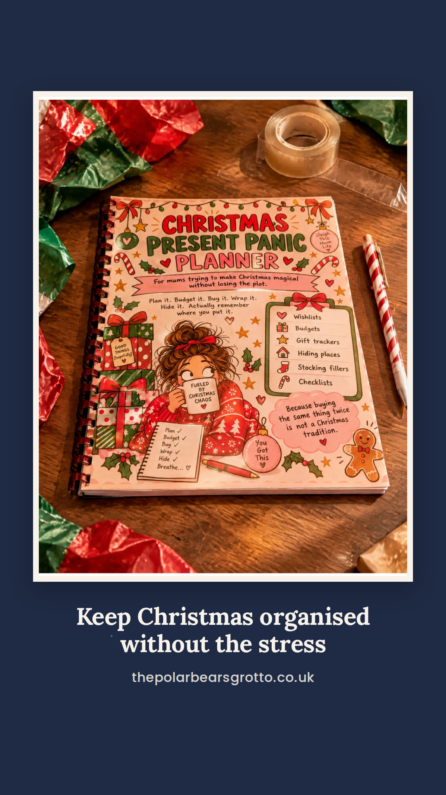
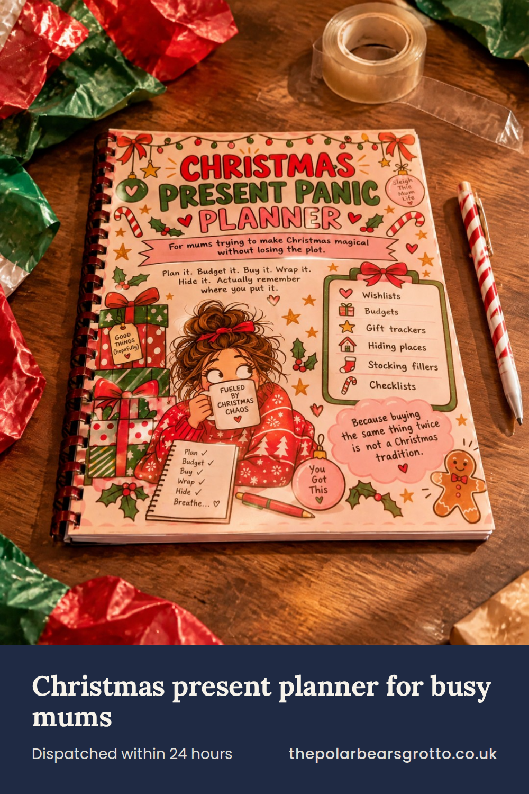

Story Tue 24 Nov 09:00 · instagram_story
planner - Christmas

Hook: 100/100 · Quality check: 100/100 · AI label on
Instagram / Facebook caption
Nobody tells you about hiding presents and tracking 20 parcels
This 20-page printed and bound planner helps mums keep Christmas organised. It is packed with useful trackers for gifts and budgets.
Send this to someone who always leaves wrapping to the last minute.
Find them at thepolarbearsgrotto.co.uk
Other hooks considered
- Nobody tells you about hiding presents and tracking 20 parcels 100
- Stop keeping 47 Christmas lists in your head 100
- You don't have to remember everyone except yourself 83
- Stop letting the Christmas budget creep up on you 80
Reel Tue 24 Nov 18:30 · instagram, facebook, pinterest_video, tiktok
Planner - Christmas
Hook: 91/100 · Quality check: 92/100 · AI label on · captions from template
wording: repeats 'planner'
Instagram / Facebook caption
You don't have to juggle 47 lists
The Christmas planner is a 20-page printed and bound planner for mums keeping Christmas organised: wishlists, budgets, gift and delivery trackers, and where you hid the presents. Dispatched within 24 hours, UK only.
Tell me in the comments: who's on your list this year?
Find them at thepolarbearsgrotto.co.uk
Pinterest
Christmas Present Planner: Chaotic Mum 20-Page A4 Printed Gift Organiser
This Christmas present planner helps busy mums stay organised. Keep track of gifts, hiding spots and deliveries with this printed Christmas planner and Christmas gift organiser. Made in the UK with handy checklist pages. thepolarbearsgrotto.co.uk
Link: https://thepolarbearsgrotto.co.uk/products/chaotic-mum-christmas-present-planner
TikTok
You don't have to juggle 47 lists. The Chaotic Mum Christmas Present Panic Planner is a 20-page printed A4 organiser for busy mums tackling the festive chaos. thepolarbearsgrotto.co.uk #ChristmasPlanner #ChristmasOrganiser #MumLifeChristmas #GiftPlanner
Other hooks considered
- Stop keeping 47 Christmas lists in your head 100
- You don't have to juggle 47 lists 91
- You don't have to remember everyone except yourself 83
- Stop losing gifts in your wardrobe 80
Pinterest pin Tue 24 Nov 20:00 · pinterest
planner - Christmas

Hook: 100/100 · Quality check: 100/100 · AI label on
Instagram / Facebook caption
Nobody tells you about hiding presents and tracking 20 parcels
This 20-page printed and bound planner helps mums keep Christmas organised. It is packed with useful trackers for gifts and budgets.
Send this to someone who always leaves wrapping to the last minute.
Find them at thepolarbearsgrotto.co.uk
Pinterest
Christmas present planner for busy mums
Christmas present planner to help mums organise the festive chaos. Track your gift budget, parcels and wishlists easily with this printed A4 planner from thepolarbearsgrotto.co.uk.
Link: https://thepolarbearsgrotto.co.uk/products/chaotic-mum-christmas-present-planner
Other hooks considered
- Nobody tells you about hiding presents and tracking 20 parcels 100
- Stop keeping 47 Christmas lists in your head 100
- You don't have to remember everyone except yourself 83
- Stop letting the Christmas budget creep up on you 80